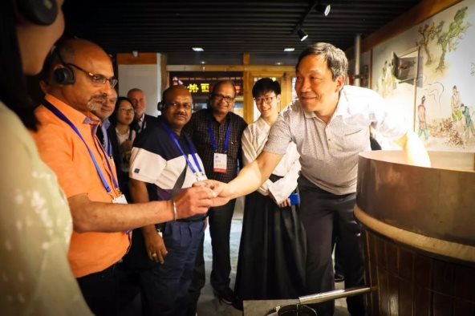

助力“2018中国国际旅游城市市长论坛”，洛邑古城向世界展示中国之美
洛邑古城 2018年5月30日
5月29日，2018中国（郑州）国际旅游城市市长论坛系列活动之一 —— “洛阳旅游之夜”旅游推介活动在洛举行。作为洛阳城市旅游的新名片、新亮点，洛邑古城在29日当晚接待了来自世界各国旅游城市的市长、市长代表、华侨、陪同翻译等近三百名海内外嘉宾，以深厚的历史文化底蕴，向世界展示了中国之美。
2018中国（郑州）国际旅游城市市长论坛由中国文化和旅游部、联合国世界旅游组织、河南省政府共同主办，论坛时间由5月27日持续至5月30日。来自28个国家90多个旅游城市的市长及市长代表相聚一堂，以“共享经济时代下的城市优质旅游”为主题，通过“一带一路”旅游城市市长峰会、“旅游新业态”分论坛、城市旅游对话会、“旅游文化”分论坛、国际旅游城市风采秀及2018中国（郑州）国际旅游城市展示、郑州旅游推介会、洛阳旅游推介会、国际旅行商“中华源”精品旅游线路体验等丰富活动，探索共享经济时代下的城市优质旅游，共商旅游合作发展。
本届论坛主要以主题演讲、权威报告发布、主题研讨、专题对话、采风体验等形式，碰撞智慧火花，开启全球旅游的“头脑风暴”，探讨旅游发展趋势。并将举行河南省投融资优选旅游项目签约仪式、世界旅游联盟“城市旅游”对话会活动。与会嘉宾将前往洛阳、登封、开封等地，实地体验厚重河南。
“八方之广，周洛为中，谓之洛邑”，被誉为“中原渡口”的洛邑古城，承担起了此次国际性旅游活动的接待重任。以古风古韵的中式建筑群、源远流长的传统非遗体验项目和博大精深的中国传统文化艺术，博得了中国同胞与异国友人的连声赞叹，为他们此次的洛阳之行，留下了浓墨重彩的一笔。

“有服章之美谓之华，有礼仪之大谓之夏”，故称 “华夏”。洛邑古城汉服汉礼体验，向世界展示了中国“衣冠上国，礼仪之邦”的历史渊源。现代科技与古典文化完美融合的文峰塔光影秀，“复活”文物，向嘉宾们讲述了洛阳城的风云变幻历史传奇。

汉洛颜子兮、墨舞丹青、古筝独奏、宫廷乐舞，遍布园区各处的实景古装表演，令嘉宾们惊叹于中国韵味，纷纷流连驻足。“三尺素豪、挥墨春秋”的汝阳刘毛笔，“妙笔生国色，丹青绘天香”的王绣牡丹，华夏美酒之源杜康老酒，以绢做画的秦氏绢艺，类银似雪的唐白瓷……琳琅满目的中国传统工艺，让嘉宾们眼花缭乱，赞不绝口，感受到中国文化艺术的非凡魅力。
旅游和文化，一直是城市发展的双引擎。文化是旅游的灵魂，文化和旅游的结合，是现代旅游的必然趋势。洛邑古城全力助力2018中国（郑州）国际旅游市长论坛的举办，并将一如既往地以文化为魂，向海内外游客敞开中国历史的大门，拥抱世界，让世界看到中国的文化之美。